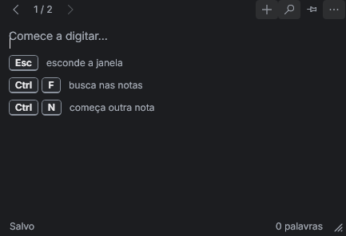
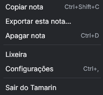

A note, one keystroke away.
Tamarin is a small, free notepad for Windows. Press a shortcut in any program, type, and close. It saves as you type, and your notes stay on your PC.
Free and open source (MIT) · Windows 10 and 11 · No account

Real screenshot. The app follows your Windows language.
Three steps, no windows to manage
The shortcut is Ctrl+Shift+Space by default. You can change it in Settings.
Press the shortcut
From any program. The window opens on the screen you are looking at, with the cursor ready.
Type
No file name, no folder, no save button. A thin line at the top lights up while it saves.
Close
Press Esc or the shortcut again. The note is already saved and easy to find with search.
What it does today
Version 0.1. Small on purpose.
- Search that forgivesIgnores accents and matches the start of words: “reun” finds “reunião”.
- Trash with undoDeleted notes can be restored. Empty notes never reach the trash.
- Checklists and Markdown shortcutsLists continue when you press Enter. Ctrl+B and Ctrl+I for bold and italic.
- Remembers where it wasPosition and size are saved for each monitor.
- Light, dark and high contrastFollows Windows, or choose one. Text size is adjustable.
- Daily backupsCopies of your notes are kept next to them, and you can back up on demand.
- Export and importExport every note as Markdown, or import .md and .txt files.
- Portable modePut an empty file named portable.flag next to the program and it keeps everything in a folder beside it.
Your notes stay on your computer
That is not a setting. The program has no code that connects to the internet.
- No account and no sign-in
- No telemetry, no analytics
- Open source under the MIT licence: read it, build it, change it
- Notes live in one file in
%APPDATA%\Tamarin
What is coming
Not in the app yet. Listed so you know what to expect.
- Notes as plain .md files in a folder you choose
- Published memory and start-up numbers, measured on real PCs
- Strikethrough, headings and inline calculations

Questions
Windows says “Windows protected your PC”. Is it safe?
The program is not code-signed yet, so Windows SmartScreen warns about any new unsigned program. Click “More info”, then “Run anyway”. If you prefer, read the code and build it yourself: the steps are in the repository.
Does it sync between computers?
No. Notes stay on one PC. You can export them as Markdown and move them wherever you like.
Which Windows versions work?
It is built for Windows 10 and 11, 64-bit. It has been tested on Windows 10 so far.
How do I remove it?
Quit it from the notification area, delete the program, and delete the folder %APPDATA%\Tamarin if you also want your notes gone.
Is it really free?
Yes. There is no paid version, no per-seat price and no account.